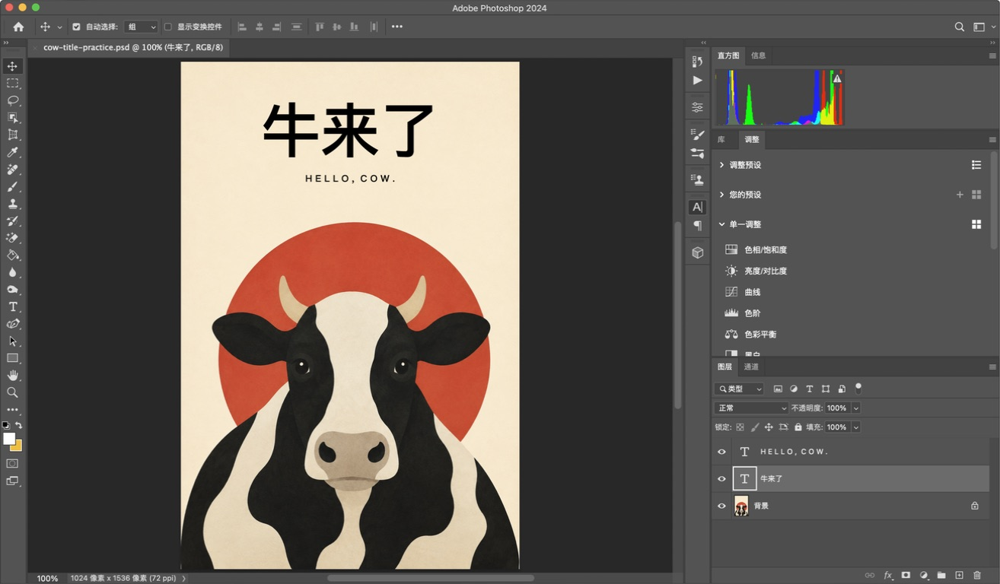

AI 作品接手指南 · macOS · Photoshop 2024 中文版
把「牛来了」
改成你的标题。
从一张已完成的海报开始，只练习修改标题。你会得到一个仍能继续改字的 PSD 文件。
这份指南里的截图来自实际 Photoshop 操作。示范把「牛来了」改成「好牛啊」；演示使用工程副本；下载练习文件后可以自己尝试。
01 / 打开可编辑的练习文件
在 Photoshop 选择文件 → 打开，选本指南同目录下的 practice.psd。如果浏览器把 PSD 下载到“下载”文件夹，就从那里打开。
右下角的“图层”面板列出了这张海报的三部分：英文文字、中文标题、背景。T 图标表示文字仍然可以输入修改。牛和红色圆形包含在背景图片里。
① 看右下角三行图层。截图使用的是练习副本 cow-title-practice.psd，内容与提供的练习文件一致。点击图片可放大。我只看到一行“背景”，或找不到图层面板
只有“背景”通常说明打开了 PNG。重新打开本指南的 PSD。图层面板没显示时，可从“窗口 → 图层”找回；这个隐藏面板的分支未在本次环境中演示。
02 / 双击标题左边的 T
在“牛来了”这一行，双击左侧 T 图标。不要双击右边的图层名称，那会进入图层重命名。
成功的标志：画布上的三个字出现深色选中背景。此时输入会替换这三个字。
② 双击这里的 T。文字被选中后显示的白字、深底是选中提示，不是海报配色发生了变化。
03 / 输入新标题，再点 ✓
- 保持三个字被选中，直接输入 好牛啊。使用中文输入法时，先选定候选字。
- 核对画布上的文字，再点击顶部选项栏的 ✓，完成这次文字编辑。
- 检查标题完整、居中，英文和牛的位置都没变。
③ 点顶部的勾号确认。此时是文字编辑状态；点击画布空白处可能改变输入位置，优先用这个勾号完成。为什么只改标题？因为你正在编辑独立的中文文字图层。原来的字体、字号和对齐方式会随文字保留。三个字换成三个字，较容易保持现有版面。
字变多了，会发生什么？
本例是居中的点文字。增加字符时，标题会向两侧变宽，不会自动替你缩小字号。本节先练习三个字；更长的标题要额外检查是否超出画布边缘。本次没有演示长标题的字号调整。
04 / 改错了，先恢复
已经点 ✓ 后，选择编辑 → 还原编辑文字图层。本次演示里，这一步让“好牛啊”恢复成了“牛来了”。菜单名称会随上一步操作变化，认准“还原”即可。

实际还原后的画面。标题恢复，插画和英文保持原样。改了图层名字，画布上的字却没变
你双击的是图层名称。结束命名后，双击同一行左侧的 T 图标，再替换选中的画布文字。图层名称用于找内容，画布文字才是海报实际显示的内容。
新文字和旧文字叠在一起
可能在画布空白处创建了一个新文字图层。先结束当前输入，用“编辑”菜单中的“还原”逐步恢复，观察画布回到修改前的样子，再从原来的 T 图标进入。这个错误分支是判断提示，未刻意在练习文件里制造。
05 / 把新版本存成 PSD
完成标题修改并点 ✓ 后，选择文件 → 存储为。macOS 默认快捷键是 ⇧ + ⌘ + S；本次实际使用并验证了这个快捷键。
- 将文件名改为 我的牛海报.psd，选择你能找到的文件夹。
- 格式保持 Photoshop，点击存储。
- 等进度结束，核对文档标签的新文件名；没有 * 星号表示当前更改已保存。
公开案例省略了包含本机其他目录信息的保存对话框截图。另存为操作已在原演示中验证，请按上方步骤选择自己的文件名与位置。
PSD 保留可编辑文字；PNG 是供观看、分享的成品图片。本次终点是可继续改字的 PSD。
来源与验证范围